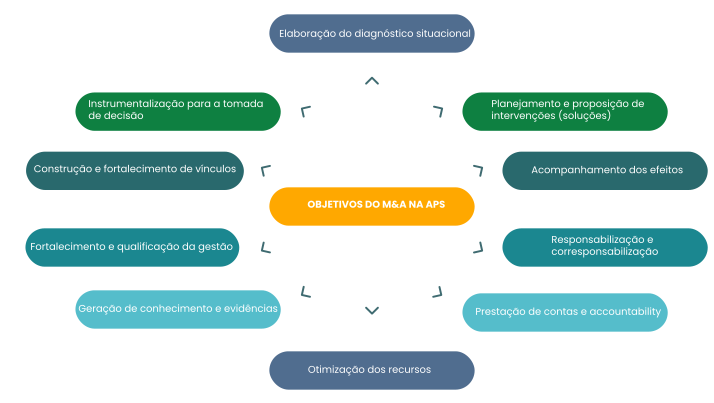

TÓPICO 1
MONITORAMENTO E AVALIAÇÃO NA GESTÃO EM SAÚDE
TÓPICO 1
MONITORAMENTO E AVALIAÇÃO NA GESTÃO EM SAÚDE
No esquema abaixo, elencamos os principais objetivos do monitoramento e da avaliação na APS.
No entanto, lembre-se de que os objetivos são diversos, não se limitando aos apresentados aqui.
